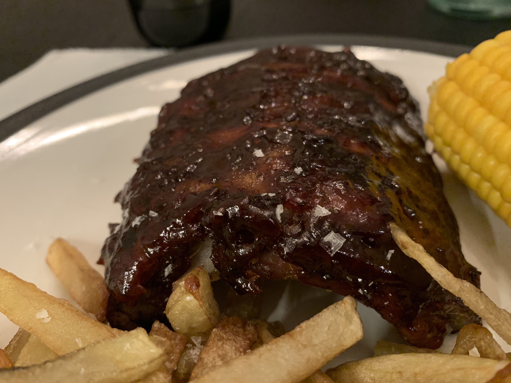

Blueberry BBQ sauce recipe
29/12/18
It's not every day that you get a sweet and tangy barbecue sauce. Try it with beef, chicken, pork or even some grilled shrimp.

Makes 5 cups
INGREDIENTS
1 cup blueberries
1 chipotle pepper in adobo sauce
6 tablespoons honey
1 and 1/2 cups ketchup
1/3 cup cider vinegar
1/4 cup blackstrap molasses
3 tablespoons worcestershire sauce
3 tablespoons dark brown sugar
1/2 teaspoon granulated garlic
1/2 teaspoon granulated onion
1/2 teaspoon dry english mustard
1/2 teaspoon black pepper
1/2 teaspoon salt
1/2 teaspoon ground ginger
INSTRUCTIONS
In a food processor or a blender
PUREE the berries, honey and chipotle pepper
TRANSFER the mixture to a saucepan
ADD combined ketchup, vinegar, molasses, worcestershire sauce, dark brown sugar, garlic, onion, mustard, black pepper and salt.
SIMMER this mixure over low heat for 30 mins, stiring occasionally.
REMOVE the sauce from the heat and cool
The finished and cooled sauce can be stored in an airtight container in the refrigerator for up to a month.